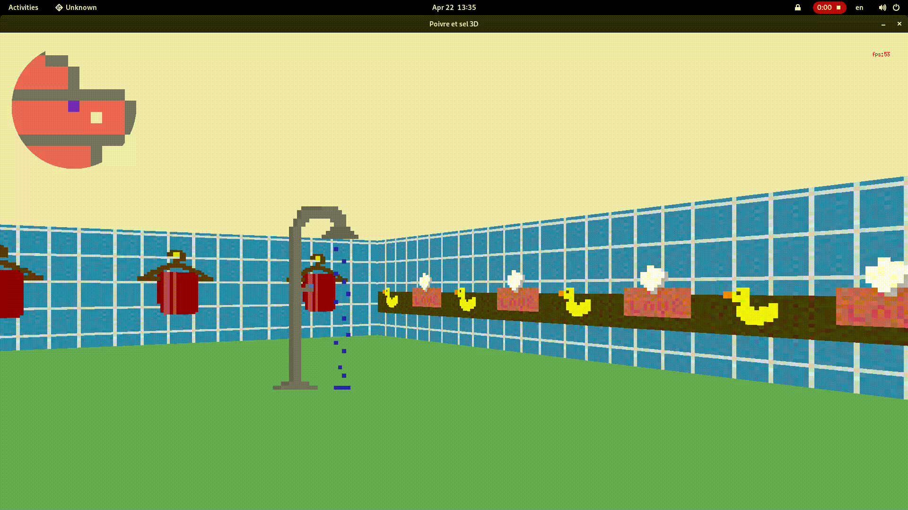
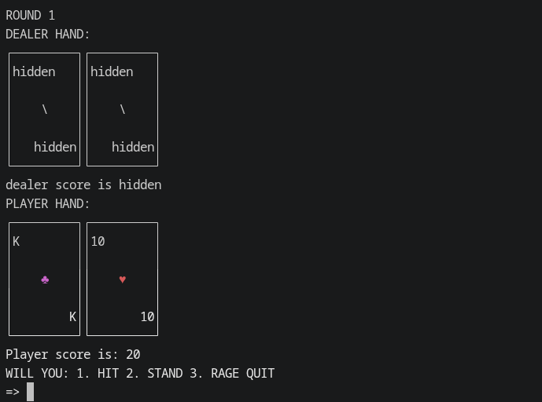

Hi, I'm Mael.
Welcome to my portfolio, this is a small collection of what I've done so far.
Cub3D
Do I need a shower?
Cub3D is a 3D engine group project. It uses raycasting to create a 3D perspective of a 2D map. We used a simple window manager library (MiniLibX) and C to create this project. It handles movement, rotation, texture on each side of the walls, animations, a minimap and mouse control.
This project was a great opportunity to learn about 3D graphics and C programming. It was also a great opportunity to learn about teamwork and collaboration. For this project I used C, Makefile and Git.

Inception
But it works on my machine...
This project consists of deploying a Wordpress website, using Docker, obviously, making it able to be deployed on any machine.
For this project I used Docker/Docker-compose, Wordpress, MariaDB and Nginx.

BlackJack CLI
The machine always win, or something like that...
This project is a simple command-line interface for a game of Blackjack coded entirely in C++. The game is really simple with not a lot of features, but it feels great to play, proving that a game does not need complexity or a lot of content to be good.
For this project I used C++ and Makefile. I wasn't planning on putting this project in my portfolio, because it was supposed to be a small fun project for myself, but the people I've shown it to really liked it, so I decided to add it.

Honorable Mentions
Here are some other projects I've worked on that I'm proud of:
- Minishell: a simpler version of the posix bash shell, executing command and navigating throught the file system.
- Philosopher: a solution for the famous dining philosophers problem, using threads and mutexes.
- libasm: a simple library of a few functions written using NASM.
Languages & Tools
Here are some of the technologies I've worked with: